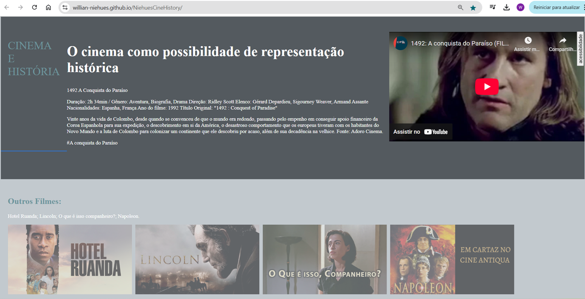
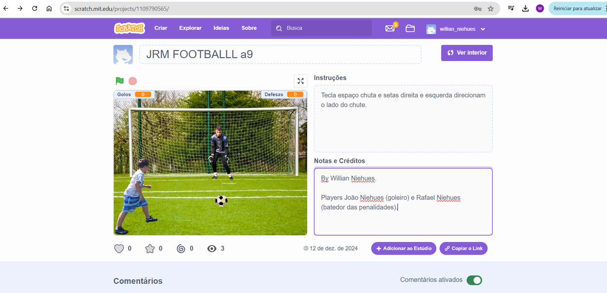
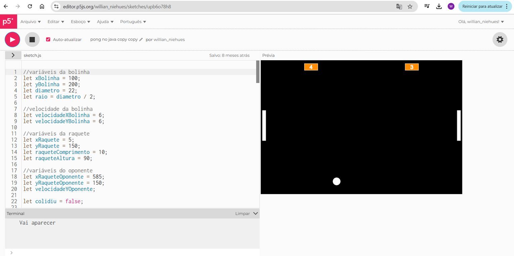

My Projects

Webpage Cine History
Este projeto é uma page web que aprensenta uma lista de filmes de História fundamentais para sala de aula.

JRM FOOTBALLL
Este projeto é um jogo de penalidades máximas, desenvolvido no ambiente do Scratch. Players João Niehues (goleiro) e Rafael Niehues (batedor das penalidades).

Pong no Java
Este projeto de rememoração da história dos games, simulando, no ambiente do p5.js, o precursor dos jogos de video game, "Pong", criado há mais de 50 anos (1972) nos EUA.